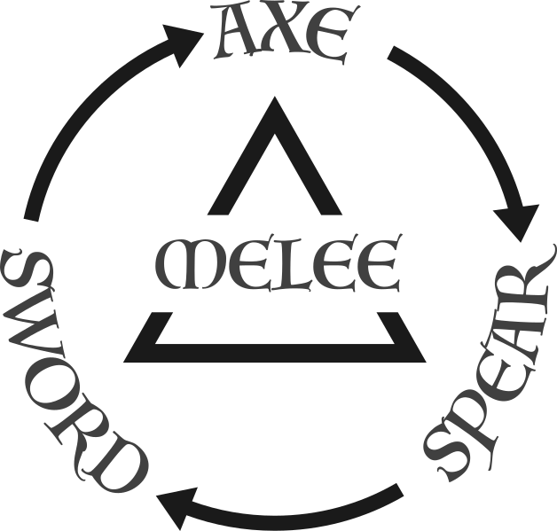
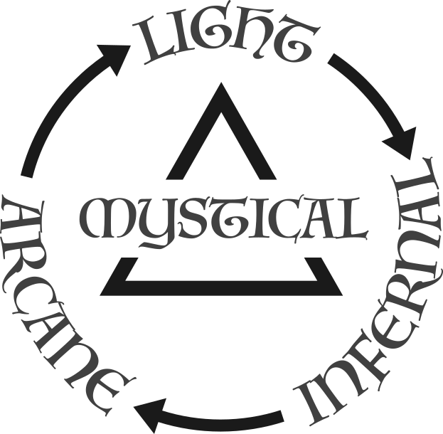

Start of round: Count each player's Active and Downed fighters — that is their activation count. Do not count Stunned, Out of Action, or Escaped fighters. The player with the lower activation count has initiative and gains Overwatch tokens equal to the difference between the two counts. Do not recalculate activation count, initiative, or tokens during the round.
Activations: Starting with the player who has initiative, players alternate activating one fighter at a time. Each fighter performs 2 actions in any order.
End of round: The round ends when every fighter who can activate has activated. Remove unspent Overwatch tokens. Begin a new round.
| Action | Effect |
|---|---|
| Move | Move up to Movement; pass through friendlies |
| Crawl | Downed only — horizontal, half Movement |
| Charge | Horizontal — up to Movement; end in engagement; cross terrain 1" or lower freely |
| Climb | Up to half Movement per action; may chain 2 Climb actions |
| Scramble | Half Movement through difficult terrain |
| Jump | Open space up to Movement; Skill check |
| Retreat | Leave engagement — Skill check; fail → free enemy Melee |
| Melee | Attack in engagement; Attack Sequence |
| Ranged | Bow/crossbow → Attack Sequence; firearm → Primer Roll |
| Cast | Caster only — Casting Roll |
| Aim | Next Ranged +1 dominant die; nat 6 = crit (5+ if weapon already crit on 6) |
| Mercy Kill | Stunned enemy within 1" → Out of Action; Downed enemy within 1" → Melee, unblocked hit sends them Out of Action; blocked if any other Active or Downed enemy is in engagement range |
| Overwatch | Spend 1 Overwatch token — react with 1 action when an enemy completes an action; remaining action may be used before or after |
| Brace | +1 Might defense die until next activation |
| Hide | Hidden within 1" of terrain |
| Recover | Downed — roll 1d6 (see back) |
| Help | Downed/Stunned friendly within 1" — 1d6 |
| Interact | Doors, scenario objects, items |
Step 1 — Build the Strike Pool: Fighter Might + Skill + weapon +Might / +Skill, to a maximum of 15 dice. Firearms and damage spells use a flat Strike Pool instead.
Step 2 — Roll to hit: Melee → Close Combat. Ranged → Ranged Combat. Apply Hit attribute modifiers.
Step 3 — Determine criticals: Weapon triangle, magic triangle, Aim, or firearms. Critical hits cannot be blocked.
Step 4 — Roll defense: Build the pool: defender Might + Skill, modified by armor before rolling (Light +1 Sk, Medium +1 Mt, Heavy +2 Mt −1 Sk), plus bonuses. Roll all as Df checks. Attacker wins ties by color; a shield shifts ties to the defender.
Step 5 — Apply Wounds (below).
Each unblocked hit inflicts 1 Wound.
Downed — full defense pool. Stunned — Might dice only.
Armor adds dice to the pool before rolling. Shields change who wins ties. Effects stack. Ties: when blocks = hits in a color category, attacker wins — 1 hit gets through.
| Gear | Effect |
|---|---|
| Light Armor | +1 Skill die |
| Medium Armor | +1 Might die |
| Heavy Armor | +2 Might dice, −1 Skill die |
| Buckler | Defender wins Skill ties |
| Shield | Defender wins all ties |
| Tower Shield | Defender wins all ties; +1 Might die |
A natural 6 in the Strike Pool is a critical hit only when the attacker has triangle advantage over the defender — weapon triangle in melee, magic triangle on spell attacks. Firearms crit against all targets. Aim adds crit on 6 to non-firearm ranged weapons, or improves an existing crit threshold to 5+. Crits cannot be blocked. All other 6s are normal hits.


| Result | Effect |
|---|---|
| Double 1s | Mishap |
| Below difficulty | Fizzles; action spent |
| Meets or exceeds | Attack Sequence |
| Result | Effect |
|---|---|
| Double 1s | Misfire |
| Below difficulty | Fails to fire |
| Meets or exceeds | Attack Sequence |
Exact takedowns become Downed. Overkill and Impact weapons become Stunned.
| Roll | Recover (1d6) | Help (1d6) |
|---|---|---|
| 1 | Stunned | Target Out of Action |
| 2–3 | Stay Downed | No effect |
| 4–5 | Stand with 1 Wound | Target becomes Downed |
| 6 | Stand with 1 Wound + 1 action | Target stands with 1 Wound |
| Condition | Effect |
|---|---|
| Affliction 1: Weakened | −1 Might |
| Affliction 2: Enfeebled | −1 Might, −1 Skill |
| Affliction 3: Withered | −1 Might, −1 Skill, −1" Movement |
| Bleeding | 1 Wound; Will each activation |
| Blinded | No Melee/Ranged |
| Broken | Will check or flee toward nearest edge |
| Fear / Panic | Cannot close; Panic flees |
| Insanity | Roll 1d6 table |
| Keyword | Effect |
|---|---|
| Caster | Spells; Cast action |
| Large | Cannot Hide |
| Swarm | Sk = Wounds; +1 Hit vs; no Downed/Stunned |
| Summon | Duration per value |
| Hidden | Not targeted Ranged/Cast > 6" |
| Fly | Ignore vertical for Move/Jump |
| Fearless | Immune Fear/Panic/Insanity; +1 rout |
| Undead | Silver, Radiant Strike, etc. |